Java基础语法¶
1. Java关键字¶
1.1 定义¶
Java关键字是被java语言赋予了特殊含义的字符串（单词）。
例如：HelloWorld案例中，出现的关键字有 public 、 class 、 static 、 void 等，这些单词已经被Java定义，具有明确的含义。
关键字的特点：全部都是 小写字母 。
1.2 Java的关键字：¶
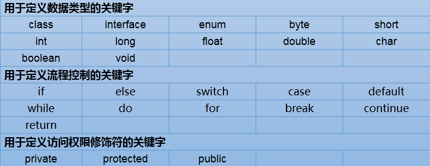
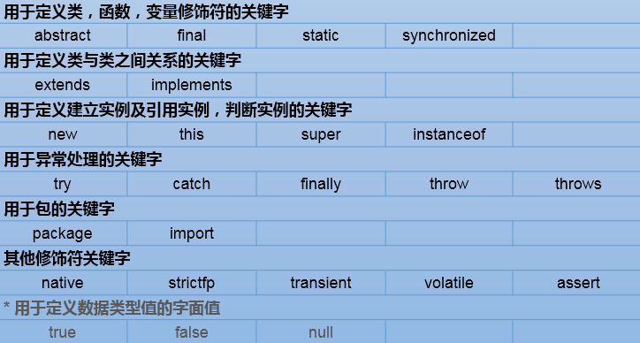
保留字：现Java版本尚未使用，但以后版本可能会作为关键字使用。
具体哪些保留字：goto 、const
注意：自己命名标识符时要避免使用这些保留字
2. 标识符¶
2.1 定义¶
标识符概念：即给类、变量、方法、包等命名的字符序列，称为标识符。
简单的说，凡是程序员自己命名的部分都可以称为标识符。
2.2 标识符的命名规则（必须遵守）¶
（1）组成：英文大小写字母，数字，下划线_，美元符号$
（2）数字不能开头
（3）严格区分大小写
（4）不能使用Java的关键字（包含保留字）和特殊值
2.3 标识符的命名规范（遭受鄙视）¶
（1）见名知意
（2）类名、接口名等：每个单词的首字母都大写，形式：XxxYyyZzz，
例如：HelloWorld，String，System等
（3）变量、方法名等：从第二个单词开始首字母大写，其余字母小写，形式：xxxYyyZzz，
例如：age,name,bookName,main
（4）包名等：每一个单词都小写，单词之间使用点.分割，形式：xxx.yyy.zzz，
例如：java.lang
（5）常量名等：每一个单词都大写，单词之间使用下划线_分割，形式：XXX_YYY_ZZZ，
例如：MAX_VALUE,PI
3. 计算机存储数据¶
3.1 进制分类与表示方式¶
1.十进制： 数字组成：0-9 进位规则：逢十进一
System.out.println(10);////10表示十进制的10，输出十进制结果10
- 二进制： 数字组成：0-1 进位规则：逢二进一
表示方式：以0b或0B开头
System.out.println(0B10);//0B10表示二进制的10，输出十进制结果2
十进制的256，二进制：100000000，为了缩短二进制的表示，又要贴近二进制，在程序中引入八进制和十六进制
3.八进制：很少使用 数字组成：0-7 进位规则：逢八进一
表示方式：以0开头
System.out.println(010);//010表示八进制的10，输出十进制结果8
与二进制换算规则：每三位二进制是一位八进制值
- 十六进制 数字组成：0-9，a-f或A-F 进位规则：逢十六进一
表示方式：以0x或0X开头
System.out.println(10);//0x10表示十六进制的10，输出十进制结果16
与二进制换算规则：每四位二进制是一位十六进制值
3.2 进制的转换¶
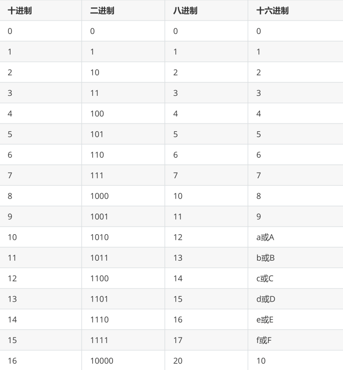
3.3 十进制转二进制：¶
使用除以2倒取余数的方式
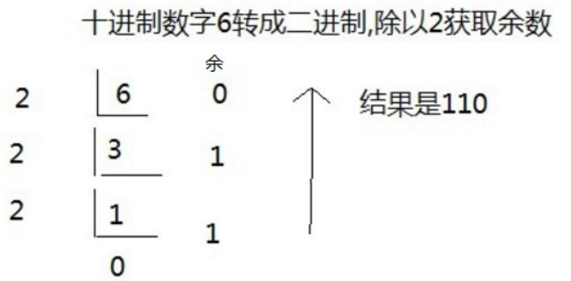
3.4 二进制转十进制：¶
从右边开始依次是2的0次，2的1次，2的2次。。。。
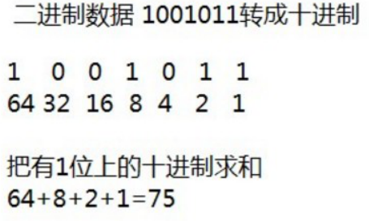
3.5 二进制数据转八进制数据¶
从右边开始，3位二进制对应1位八进制
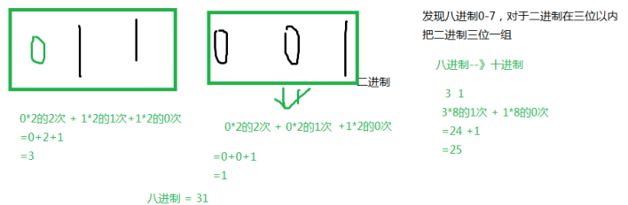
3.6 二进制数据转十六进制数据¶
从右边开始，4位二进制对应1位十六进制
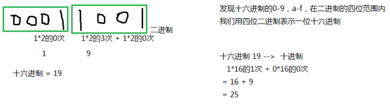
4. 计算机存储单位¶
- 位（bit）：是数据存储的最小单位，也就是一个二进制位。其中8 bit 就称为1个字节(Byte)。
- 字节（Byte）：是计算机信息技术用于计量存储容量的一种计量单位，1字节等于8bit。
-
转换关系：
-
- 8 bit = 1 Byte
- 1024 Byte = 1 KB
- 1024 KB = 1 MB
- 1024 MB = 1 GB
- 1024 GB = 1 TB
5. 数据存储¶
计算机底层都是使用二进制进行数据的存储的。不同类型的数据，存储方式也有不同。
5.1 整数存储¶
计算机底层存储整数并不是把整数转换为二进制直接存储，而是以二进制的补码形式进行存储。要
了解补码还有知道原码和反码：
- 原码：把十进制转为二进制，然后最高位设置为符号位，1是负数，0是正数。
- 反码：正整数的反码与原码相同，负整数的反码在原码的基础上，符号位不变，其余位取反（0变1,1变0）
- 补码：正整数的补码与原码相同，负整数的补码为其反码+1
例如：用1个字节的二进制表示一个数
25 ==> 原码 0001 1001 ==> 反码 0001 1001 -->补码 0001 1001
-25 ==>原码 1001 1001 ==> 反码1110 0110 ==>补码 1110 0111
5.1.1 整数范围¶
分为两种情况：
- 无符号：不考虑正负数
0000 0000 ~ 1111 1111 ==> 0~255
- 有符号：
0000 0000 ~ 0111 111 ==> 0~127
1000 0001 ~ 1111 1111 ==> -127 ~ -1 （补码形式存储）
1000 0000 ==> -128 特殊值，最高位既是符号位，又是数值位
5.1 小数存储¶
float、double底层也是二进制，先把小数转为二进制，然后把二进制表示为科学记数法，然后只保存：
①符号位②指数位③尾数位
5.2 字符¶
编码表：将人类的文字和一个十进制数进行对应起来组成一张表格。
将所有的英文字母，数字，符号都和十进制进行了对应，因此产生了世界上第一张编码表ASCII（American Standard Code for Information Interchange 美国标准信息交换码）。
例如：用1个字节的二进制表示一个数
Unicode(统一码、万国码、单一码)是计算机科学领域里的一项业界标准，包括字符集、编码方案等。Unicode 是为了解决传统的字符编码方案的局限而产生的，它为每种语言中的每个字符设定了统一并且唯一的二进制编码，以满足跨语言、跨平台进行文本转换、处理的要求。
Java中字符常量的几种表示方式
- '一个字符'
例如：'A'，'0'，'尚'
- 转义字符
\n：换行
\r：回车
\t：Tab键
\\：\
\"："
\'：'
\b：删除键Backspace
System.out.println('\\');
System.out.println("hello\tworld\njava");
- \u字符的Unicode编码值的十六进制型
例如：'\u674e'代表'尚'
char c = '\u674e';
char c = '尚';
String s = '尚';//错误的，哪怕是一个字符，也要使用双引号
char c2 = '';//错误，单引号中有且只能有一个字符
String s2 = "";//可以，双引号中可以没有其他字符，表示是空字符串
- 直接给char类型变量赋值十进制的0~65535之间的Unicode编码值
例如：'尚' 的编码值是23578; 'a'的编码值是97
char c1 = 23578;
System.out.println(c1);//李
char c2 = 97;
System.out.println(c2);//a
6. 数据类型（data type）¶
6.1 数据类型分类¶
Java是一种强类型的语言，针对每一种数据都定义了数据类型，不同类型的数据二进制表示方式不同，分配的空间大小也有区别，java数据类型主要分为两大类：（定义变量需要确定数据类型，即确定数据使用的空间大小和二进制表示形式）
- 基本数据类型：包括 整数 、 浮点数 、 字符 、 布尔 。
- 引用数据类型：包括 类 、 数组 、 接口 。
6.2 基本数据类型¶
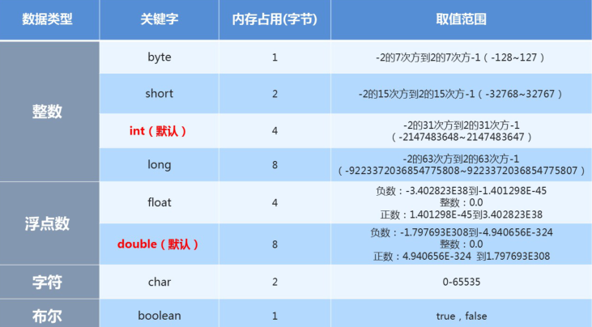
Java中的默认类型：整数类型是 int 、浮点类型是 double
- 常量整数值都是int类型，占用4个字节空间。程序运行期间byte、short、char、boolean实际都是占用4个字节内存空间， 但在逻辑上： byte只有低8位有效空间。 short只有低16位有效空间。 所以，可以直接把一个byte范围内的整数常量值直接赋给byte类型变量。short同理。byte b=10; 赋值给int，只要在int范围即可。 赋值给long，在int范围内的，可以加也可以不用加L，会自动升级为long，如果数字超过int范围，必须加L。
- 小数常量值，无论多少，不加F，就是double类型。
6.2.1 基本数据类型存储范围¶
6.2.1.1 整型系列¶
- byte：字节类型
占内存：1个字节 存储范围：-128~127
- short：短整型类型
占内存：2个字节 存储范围：-32768~32767
- int：整型
占内存：4个字节 存储范围：-2的31次方 ~ 2的31次方-1
- long：整型
占内存：8个字节 存储范围：-2的63次方 ~ 2的63次方-1
注意：如果要表示某个超过int范围的常量整数它是long类型，那么需要在数字后面加L
6.2.1.2 浮点型系列（小数）¶
- float：单精度浮点型
占内存：4个字节 精度：科学记数法的小数点后6~7位
- double：双精度浮点型
占内存：8个字节 精度：科学记数法的小数点后15~16位
6.2.1.3 单字符类型：char¶
占内存：2个字节 使用单引号
6.2.1.4 布尔类型¶
boolean：只能存储true或false
6.3 基本数据类型转换¶
在Java程序中，不同的基本数据类型的值经常需要进行相互转换。Java语言所提供的七种数值类型之间可以相互转换，基本数据类型转换有两种转换方式：自动类型转换和强制类型转换。
6.3.1 自动类型转换¶
将 取值范围小的类型 自动提升为 取值范围大的类型 。
基本数据类型按照取值范围从小到大的关系，如图所示：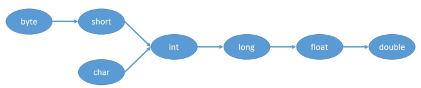
以下情况会发生自动类型转换（隐式类型转换）：
-
当把存储范围小的值（常量值、变量的值、表达式计算的结果值）赋值给了存储范围大的变量时，¶
int i = 'A';//char自动升级为int
double d = 10;//int自动升级为double
byte b = 127; //右边的整数常量值必须在-128~127范围内
//byte bigB = 130;//错误，右边的整数常量值超过byte范围
long num = 1234567; //右边的整数常量值如果在int范围呢，编译和运行都可以通过，这里涉及到数据
类型转换
long bigNum = 12345678912L;//右边的整数常量值如果超过int范围，必须加L，否则编译不通过
-
当存储范围小的数据类型与存储范围大的数据类型一起混合运算时，会按照其中最大的类型运算¶
int i = 1;
byte b = 1;
double d = 1.0;
double sum = i + b + d;//混合运算，升级为double
-
当byte,short,char数据类型进行算术运算时，按照int类型处理¶
byte b1 = 1;
byte b2 = 2;
byte b3 = b1 + b2;//编译报错，b1 + b2自动升级为int
char c1 = '0';
char c2 = 'A';
System.out.println(c1 + c2);//113
6.3.2 强制类型转换¶
将 取值范围大的类型 转换成 取值范围小的类型 时需要进行强制（显示）类型转换。
int i = 1.5; // 错误
int i = (int)1.5; // 强制类型转换,正确
强制类型转换有风险，可能会损失精度或溢出
6.3.3 特殊的数据类型转换¶
任意数据类型的数据与String类型进行“+”运算时，结果一定是String类型
System.out.println("" + 1 + 2); // 结果为12
7. 流程控制语句¶
7.1 顺序结构¶
顺序结构就是程序从上到下逐行地执行，中间没有任何判断和跳转。如果main方法的多行代码之间没有任何流程控制，则程序总是从上向下依次执行，排在前面的代码先执行，排在后面的代码后执行。
public static void main(String[] args){
//顺序执行，根据编写的顺序，从上到下运行
System.out.println(1);
System.out.println(2);
System.out.println(3);
}
System.out.printf()
%d：十进制整数
%f：浮点数
%c：单个字符
%b：boolean值
%s：字符串
public static void main(String[] args) {
byte b = 127;
int age = 18;
long bigNum = 123456789L;
float weight = 123.4567F;
double money = 589756122.22552;
char gender = '男';
boolean marry = true;
String name = "张三";
System.out.printf("byte整数：%d，年龄：%d，大整数：%d，身高：%f，身高：%.1f，钱：%f，钱：%.2f，性别：%c，婚否：%b，姓名：%s", b,age,bigNum,weight,weight,money,money,gender,marry,name);
}
7.2 分支结构¶
7.2.1 if语句第一种格式¶
if(条件表达式)｛
语句体;
｝
执行流程
首先判断条件表达式看其结果是true还是false
如果是true就执行语句体
如果是false就不执行语句体
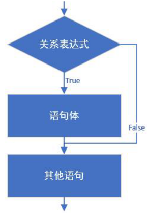
public static void main(String[] args){
System.out.println("开始");
// 定义两个变量
int a = 10;
int b = 20;
//变量使用if判断
if (a == b){
System.out.println("a等于b");
}
int c = 10;
if(a == c){
System.out.println("a等于c");
}
System.out.println("结束");
}
7.2.2 if语句第二种格式¶
if(关系表达式) {
语句体1;
}else {
语句体2;
}
执行流程
首先判断关系表达式看其结果是true还是false
如果是true就执行语句体1
如果是false就执行语句体2
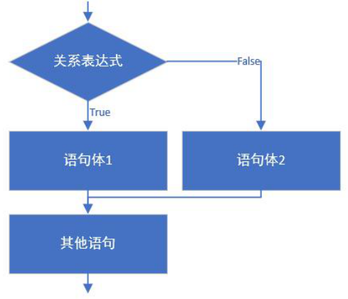
public static void main(String[] args){ // 判断给定的数据是奇数还是偶数
int a = 1; // 定义变量
if(a %2 == 0) {
System.out.println("a是偶数");
}else{
System.out.println("a是奇数");
}
System.out.println("结束");
}
7.2.3 if语句第三种格式¶
if (判断条件1) {
执行语句1;
} else if (判断条件2) {
执行语句2;
}
...
}else if (判断条件n) {
执行语句n;
} else {
执行语句n+1;
}
执行流程
首先判断关系表达式1看其结果是true还是false
如果是true就执行语句体1，然后结束当前多分支
如果是false就继续判断关系表达式2看其结果是true还是false
如果是true就执行语句体2，然后结束当前多分支
如果是false就继续判断关系表达式…看其结果是true还是false
…
如果没有任何关系表达式为true，就执行语句体n+1，然后结束当前多分支。
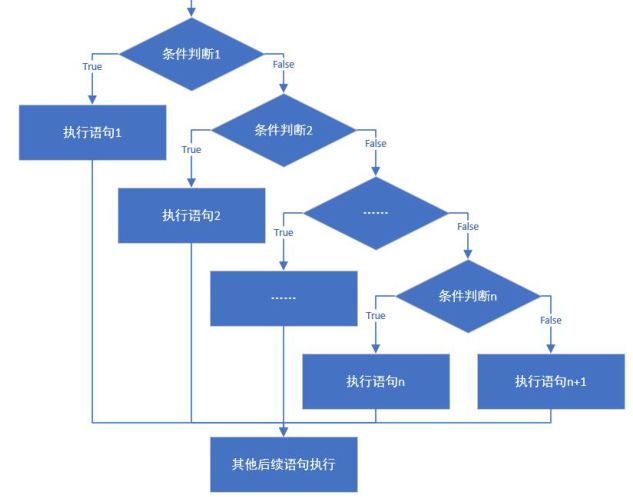
7.2.4 if嵌套语句¶
在if的语句块中，或者是在else语句块中， 又包含了另外一个条件判断（可以是单分支、双分支、多分支）
public static void main(String[] args) {
int score = 89;
if(score<0 || score>100){
System.out.println("你的成绩是错误的");
}else{
if(score>=90){
System.out.println("你的成绩属于优秀");
}else if(score>=80){
System.out.println("你的成绩属于好");
}else if(score>=70){
System.out.println("你的成绩属于良");
}else if(score>=60){
System.out.println("你的成绩属于及格");
}else {
System.out.println("你的成绩属于不及格");
}
}
}
7.2.5 switch选择结构¶
语法格式：
switch(表达式){
case 常量值1:
语句块1;
break;
case 常量值2:
语句块2;
break;
...
default:
语句块n+1;
break;
}
执行过程：
（1）入口
①当switch(表达式)的值与case后面的某个常量值匹配，就从这个case进入；
②当switch(表达式)的值与case后面的所有常量值都不匹配，寻找default分支进入;不管default在哪里
（2）一旦从“入口”进入switch，就会顺序往下执行，直到遇到“出口”，即可能发生贯穿
（3）出口
①自然出口：遇到了switch的结束}
②中断出口：遇到了break等
注意：
- switch(表达式)的值的类型，只能是：4种基本数据类型（byte,short,int,char），两种引用数据类型（JDK1.5之后枚举、JDK1.7之后String）
- case后面必须是常量值，而且不能重复
7.3 循环语句¶
7.3.1 for循环¶
循环语句可以在满足循环条件的情况下，反复执行某一段代码，这段被重复执行的代码被称为循环体语句，当反复执行这个循环体时，需要通过修改循环变量使得循环判断条件为false，从而结束循环，否则循环将一直执行下去，形成死循环。
for(初始化语句①; 循环条件语句②; 迭代语句④){
循环体语句③
}
for(;;){
循环体语句块；//如果循环体中没有跳出循环体的语句，那么就是死循环
}
执行流程：
第一步：执行初始化语句①，完成循环变量的初始化；
第二步：执行循环条件语句②，看循环条件语句的值是true，还是false；
如果是true，执行第三步；
如果是false，循环语句中止，循环不再执行。
第三步：执行循环体语句③
第四步：执行迭代语句④，针对循环变量重新赋值
第五步：根据循环变量的新值，重新从第二步开始再执行一遍
7.3.2 while循环¶
while循环语句标准格式：
while (循环条件语句①) {
循环体语句②；
}
while(true){
循环体语句;//如果此时循环体中没有跳出循环的语句，也是死循环
}
初始化语句①；
while (循环条件语句②) {
循环体语句③；
迭代语句④；
}
注意：while(循环条件)中循环条件必须是boolean类型
执行流程：
第一步：执行循环条件语句①，看循环条件语句的值是true，还是false；
如果是true，执行第二步；
如果是false，循环语句中止，循环不再执行。
第二步：执行循环体语句②；
第三步：循环体语句执行完后，重新从第一步开始再执行一遍
7.3.3 do...while循环¶
do {
循环体语句①；
} while (循环条件语句②)；
初始化语句①
do {
循环体语句②；
迭代语句③；
} while (循环条件语句④)；
注意：
（1）while(循环条件)中循环条件必须是boolean类型
（2）do{}while();最后有一个分号
（3）do...while结构的循环体语句是至少会执行一次，这个和for和while是不一样的
执行流程：
第一步：执行循环体语句①；
第二步：执行循环条件语句②，看循环条件语句的值是true，还是false；
如果是true，执行第三步；
如果是false，循环语句终止，循环不再执行。
第三步：循环条件语句执行完后，重新从第一步开始再执行一遍
7.4 循环语句的区别¶
- 从循环次数角度分析 do...while循环至少执行一次循环体语句 for和while循环先循环条件语句是否成立，然后决定是否执行循环体，至少执行零次循环体语句
- 从循环变量的生命周期角度分析 for循环的循环变量在for()中声明的，在循环语句结束后，不可以被访问； while和do...while循环的循环变量因为在外面声明的，所以while和do...while结束后可以被继续使用的；
- 如何选择 遍历有明显的循环次数（范围）的需求，选择for循环 遍历没有明显的循环次数（范围）的需求，循环while循环 如果循环体语句块至少执行一次，可以考虑使用do...while循环 本质上：三种循环之间是可以互相转换的，都能实现循环的功能
- 三种循环结构都具有四要素： （1）循环变量的初始化表达式 （2）循环条件 （3）循环变量的修改的迭代表达式 （4）循环体语句块
7.5 关键字：break¶
-
使用场景：终止switch或者当前循环
-
- 在选择结构switch语句中
- 在循环语句中
- 离开使用场景的存在是没有意义的
-
语法案例演示1：判断某个数是否是素数 案例：从键盘输入一个大于1的自然数，判断它是否是素数 提示：素数是指大于1的自然数中，除了1和它本身以外不能再有其他因数的自然数，即某个素数n，在[2,n-1]范围内没有其他自然数可以把n整除
7.6 关键字：continue¶
使用场景：结束本次循环，继续下一次的循环
8. 运算符（Operator）¶
- 运算符：是一种特殊的符号，用以表示数据的运算、赋值和比较等。
- 表达式：用运算符连接起来的式子
8.1 运算符的分类¶
- 按照功能划分：

- 按照操作数个数划分：

8.2 算术运算符¶

8.2.1 “+”号的两种用法¶
- 第一种：对于 + 两边都是数值的话， + 就是加法的意思
- 第二种：对于 + 两边至少有一边是字符串得话， + 就是拼接的意思
public class OperatorDemo02 {
public static void main(String[] args) {
// 字符串类型的变量基本使用
// 数据类型 变量名称 = 数据值;
String str1 = "Hello";
System.out.println(str1); // Hello
System.out.println("Hello" + "World"); // HelloWorld
String str2 = "Java";
// String + int --> String
System.out.println(str2 + 520); // Java520
// String + int + int
// String + int// String
System.out.println(str2 + 5 + 20); // Java520
}
}
条件表达式?结果1:结果2
8.2.2 自加自减运算¶
理解： ++ 运算，变量自己的值加1。反之， -- 运算，变量自己的值减少1，用法与 ++ 一致。
- 单独使用
变量在单独运算的时候，变量 前++ 和变量 后++ ，变量的是一样的；
变量 前++ ：例如 ++a 。
变量 后++ ：例如 a++ 。
- 复合使用
和 其他变量放在一起使用 或者和 输出语句放在一起使用 ， 前++ 和 后++ 就产生了不同。
变量 前++ ：变量先自身加1，然后再取值。
变量 后++ ：变量先取值，然后再自身加1。
8.3 赋值运算符¶
所有的赋值运算符的=左边一定是一个变量

8.4 逻辑运算符¶
逻辑运算符，是用来连接两个布尔类型结果的运算符（ ! 除外），运算结果一定是boolean值 true 或者 false
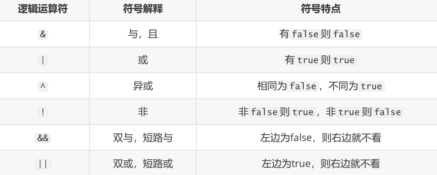
&&和&区别，||和|区别
短路与，短路或运算符左边表达式结果可以确定最终结果，则运算符右边表达式不再进行运算，效率高
- && 和 & 区别：
&& 和 & 结果一样， && 有短路效果，左边为false，右边不执行； & 左边无论是什么，右边都会执行。
- || 和 | 区别：
|| 和 | 结果一样， || 有短路效果，左边为true，右边不执行； | 左边无论是什么，右边都会执行。
8.5 比较运算符¶
比较运算符，是两个数据之间进行比较的运算，运算结果一定是boolean值 true 或者 false 。
8.6 条件运算符¶
- 条件运算符格式：
条件表达式?结果1:结果2
- 条件运算符计算方式：
条件判断的结果是true，条件运算符整体结果为结果1，赋值给变量。
判断条件的结果是false，条件运算符整体结果为结果2，赋值给变量。
8.7 位运算符（了解）¶

- 位运算符的运算过程都是基于补码运算，但是看结果，我们得换成原码，再换成十进制看结果
- 从二进制到十进制都是基于原码
- byte,short,char在计算时按照int类型处理
- 位运算直接对二进制进行位移操作实现数值运算，所以运算效率高
如何区分&,|,^是逻辑运算符还是位运算符？
如果操作数是boolean类型，就是逻辑运算符，如果操作数是整数，那么就位运算符。
左移：<< 左移几位就相当于乘以2的几次方
右移：>> 类似于除以2的n次，如果不能整除，向下取整
无符号右移：>>> 往右移动后，左边空出来的位直接补0，不看符号位
- 正数：和右移一样
- 负数：右边移出去几位，左边补几个0，结果变为正数
按位与: &
按位或: |
按位异或: ^
按位取反: !
8.8 运算符优先级¶
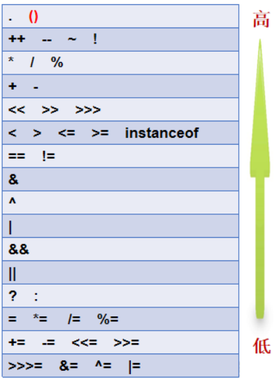
本文总阅读量次